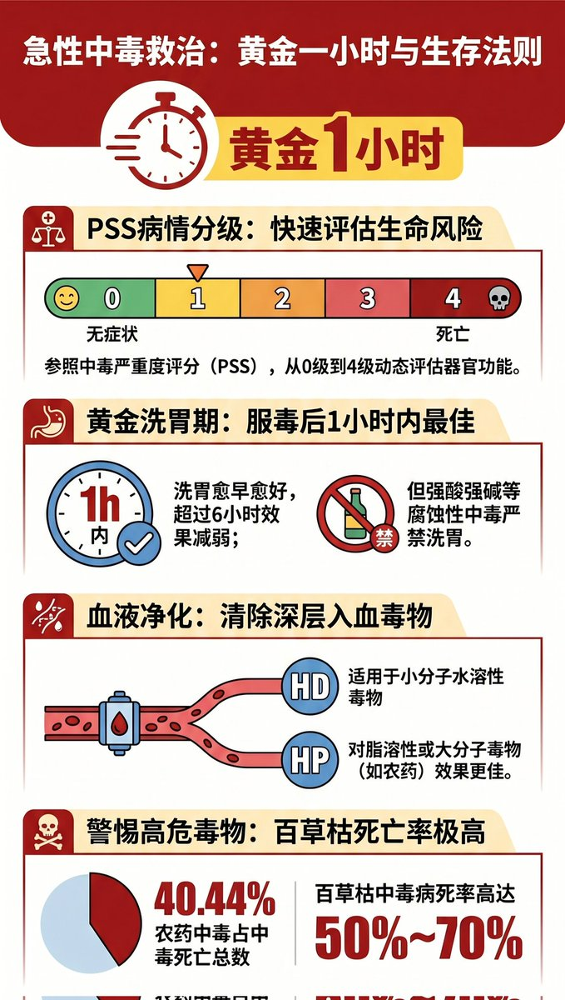
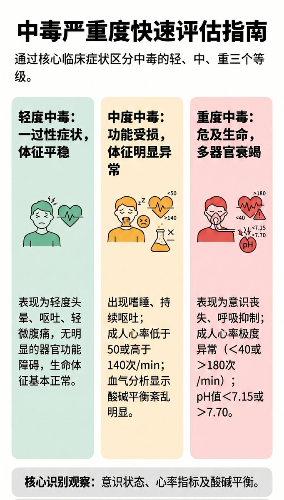
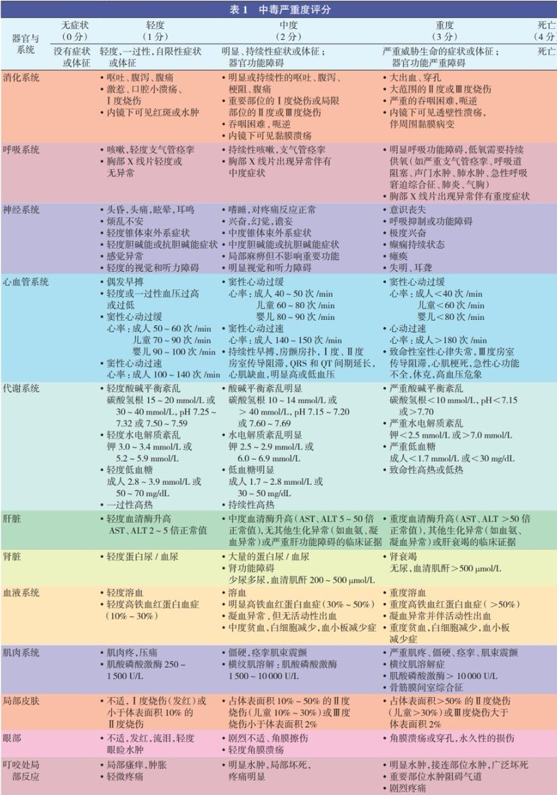
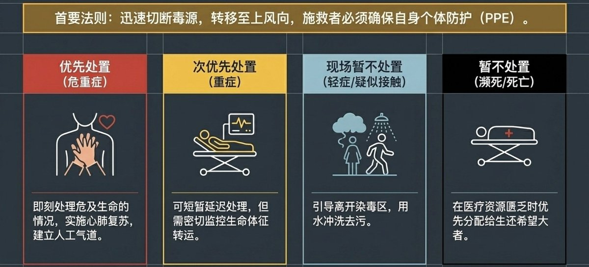

STRIDSFORDON 9040C “Ljusdimma” 🏳️⚧️
@Strf_9040C
中毒急救
✅立刻拨打电话呼叫急救服务
✅施救先做好自身防护，避免自身中毒
✅服毒1小时内是洗胃黄金期，超6小时效果下降；强酸强碱中毒严禁催吐、洗胃
✅百草枯中毒：立刻口服泥浆水/白陶土混悬液
✅皮肤/眼部沾染：立刻用流动清水持续冲洗15分钟以上
✅带毒物包装、说明书、MSDS送医，记录时间与症状



